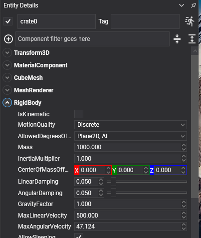

Rigid Body
RigidBody is the component that puts a moving entity into the physics simulation. Everything the solver moves is one: the crates, and the platform carrying them. The floor they land on is a StaticBody.
A RigidBody is dynamic by default, moved by gravity, collisions and forces. With IsKinematic set it is kinematic instead: moved by your code, pushing everything else out of the way. The two are one component with one flag, because a body can switch between them while the game runs.
RigidBody Component

Add a RigidBody to an entity, then add at least one collider to give it a shape:
Entity crate = new Entity("crate")
.AddComponent(new Transform3D() { Position = new Vector3(0f, 3f, 0f) })
.AddComponent(new MaterialComponent() { Material = material })
.AddComponent(new CubeMesh())
.AddComponent(new MeshRenderer())
.AddComponent(new RigidBody())
.AddComponent(new BoxCollider());
this.Managers.EntityManager.Add(crate);
The shape is collected from the colliders on the entity and on its descendants, so a compound body is a hierarchy:

On the left, the ordinary case: RigidBody and BoxCollider on the same entity. On the right, a table whose RigidBody is on the root and whose five BoxCollider components are on its children. The children carry no body of their own, and the five shapes are gathered into one compound shape for the body at the top.
Which is what "one body" means in practice: shoved over, the table tips as a single object rather than coming apart into a top and four legs.
Kinematic or Dynamic
| Property | Default | Description |
|---|---|---|
| IsKinematic | false | Off, the body is dynamic: the solver moves it through gravity, collisions and forces. On, it is kinematic: your code moves it through MoveTo, it pushes dynamic bodies and carries them, and nothing pushes it back. |
The flag can be changed at any time without recreating the body. A body that stops being kinematic simply falls from wherever it was; a body that becomes kinematic stops answering to gravity and contacts and goes where MoveTo sends it. This is how a ragdoll follows its animation and then drops.
Note
There is no static setting here. A body that never moves is a StaticBody, which is a different component with none of the motion properties below.
Mass and Surface Properties
| Property | Default | Description |
|---|---|---|
| Mass | 0 | Mass in kilograms. Zero means work it out from the volume of the colliders and their Density, which is usually what you want. Reading the property back returns the mass the solver is actually using. |
| InertiaMultiplier | 1 | Scales the inertia computed from the shape. Above 1 the body resists turning; below 1 it spins up easily. This replaces the explicit inertia tensor of the previous API. |
| CenterOfMassOffset | 0,0,0 | Moves the centre of mass away from the shape's own. Lowering it is what keeps a vehicle from rolling over. |
| Friction | 0.2 | Surface friction. The value used for a contact is combined from both bodies. |
| Restitution | 0 | Bounciness, from 0 (all energy lost on impact) to 1 (none). |
Friction and Restitution are shared with StaticBody; the rest only exist on a body that moves.
Three spheres identical but for Restitution: 0, 0.4 and 0.8.
Three boxes given the same push, with Friction at 0.02, 0.3 and 0.9.
Note
There is no physics material asset. Friction and restitution belong to the body, and density belongs to the collider.
Motion Properties
| Property | Default | Description |
|---|---|---|
| LinearVelocity | 0,0,0 | Velocity in metres per second. Set before the entity joins the scene, it becomes the body's initial velocity. |
| AngularVelocity | 0,0,0 | Angular velocity in radians per second. |
| LinearDamping | 0.05 | Slows movement down over time, whatever else is happening. |
| AngularDamping | 0.05 | Slows rotation down over time. |
| GravityFactor | 1 | Multiplies the world's gravity for this body. 0 makes it weightless; 2 makes it fall twice as hard. |
| MaxLinearVelocity | 500 | A speed limit, in metres per second. |
| MaxAngularVelocity | 47.12 | A spin limit, in radians per second: 15π, which is seven and a half turns a second. |
| AllowedDegreesOfFreedom | All |
Locks axes outright. Plane2D keeps a body in the XY plane turning only about Z, which is how a 2.5D game is built. |
| MotionQuality | Discrete |
LinearCast sweeps the body's movement between steps instead of testing only where it lands, which is what stops a fast body passing through a thin wall. |
The same shot at the same speed at two thin walls. The grey one is Discrete and goes straight through; the red one is LinearCast and stops.
Tip
AllowedDegreesOfFreedom locks an axis exactly, rather than scaling it the way the old LinearFactor and AngularFactor did. A locked axis cannot drift.
Advanced Properties
| Property | Default | Description |
|---|---|---|
| CollisionCategory | Cat1 |
Which of the 32 categories this body belongs to. A body is in exactly one. |
| IsSensor | false | Makes the body detect overlaps and report them without any physical response. See Sensors. |
| SurfaceVelocity | 0,0,0 | Tells contacts that the surface is moving even though the body is not. This is how a conveyor belt is built. |
| AllowSleeping | true | Lets this body be put to sleep when it stops moving. |
| EnhancedInternalEdgeRemoval | false | Stops bodies catching on the seams between the triangles of a mesh collider. |
| CollideKinematicVsNonDynamic | false | Needed for a kinematic body to notice static and other kinematic bodies, a kinematic sensor for instance. |
| ApplyGyroscopicForce | false | Simulates the gyroscopic effect, which matters for fast-spinning bodies. |
| SolverVelocityIterationsOverride | 0 | Per-body override of the world's solver settings. 0 uses the world's. |
| SolverPositionIterationsOverride | 0 | The same for position iterations. |
CollisionCategory, IsSensor, SurfaceVelocity and EnhancedInternalEdgeRemoval are shared with StaticBody.
SurfaceVelocity on a StaticBody. Nothing in the scene turns, and the parcels are carried anyway.
Read-only State
| Property | Description |
|---|---|
| IsActive | Whether the body is awake. |
| CenterOfMassPosition | Where its centre of mass is in world space. |
| WorldBounds | Its axis-aligned bounding box. |
| IsInWorld | Whether the body has actually been created yet. Creation is deferred to a safe point in the step. |
| Colliders | The colliders its shape was built from. |
Methods
| Method | Description |
|---|---|
| ApplyForce(force) | Applies a force at the centre of mass, in newtons. Meant to be applied every step. |
| ApplyForce(force, worldPosition) | Applies it at a point, which also produces torque. |
| ApplyTorque(torque) | Applies a turning force. |
| ApplyImpulse(impulse) | Applies an instantaneous change of momentum. A one-off kick. |
| ApplyImpulse(impulse, worldPosition) | The same, at a point. |
| ApplyAngularImpulse(impulse) | An instantaneous change of angular momentum. |
| ApplyBuoyancy(surfacePosition, surfaceNormal, buoyancy, linearDrag, angularDrag, fluidVelocity, deltaTime) | Floats the body against a fluid surface. buoyancy is the ratio of the fluid's density to the body's, so above 1 it floats. |
| GetPointVelocity(worldPoint) | The velocity of one point of the body, rotation included. |
| MoveTo(position, orientation) | Moves a kinematic body by generating the velocity needed to get there this step, so it pushes and carries properly. |
| Teleport(position, orientation) | Puts the body somewhere immediately, discarding its contacts. |
| WakeUp() / Sleep() | Force the body awake or asleep. |
| InvalidateShape() | Rebuilds the shape now. Colliders added, removed or edited, and child colliders moved, rebuild it on their own; this is for the cases the body cannot observe. |
Kinematic bodies driven with MoveTo: a platform carrying its riders, a turnstile shoving pucks out of the way, and a lift. None of them can be pushed back.
Important
To move a kinematic body use MoveTo, not the Transform3D. Writing the transform teleports the body every step: it arrives at the right place, but with no velocity, so it passes through whatever was in the way and drops whatever was standing on it.
Events
| Event | When it fires |
|---|---|
| CollisionStarted | Two bodies began touching. |
| CollisionUpdated | Once per step while they stay in contact. |
| CollisionEnded | They stopped touching. |
| Activated / Slept | The body woke up or went to sleep. |
All of them are raised on the main thread after the step, and once per pair of bodies rather than per pair of sub-shapes. See Collisions.
Using RigidBody from Code
A bouncing ball
Entity ball = new Entity("ball")
.AddComponent(new Transform3D() { Position = new Vector3(0f, 6f, 0f) })
.AddComponent(new MaterialComponent() { Material = material })
.AddComponent(new SphereMesh() { Diameter = 1f })
.AddComponent(new MeshRenderer())
.AddComponent(new RigidBody()
{
Restitution = 0.8f, // Keeps most of its energy on impact...
Friction = 0.2f,
})
.AddComponent(new SphereCollider() { Radius = 0.5f });
this.Managers.EntityManager.Add(ball);
Pushing a body
public class Launcher : Behavior
{
[BindComponent]
private RigidBody body = null;
public void Launch(Vector3 direction)
{
// An impulse rather than a force: this is a single kick, not something applied every step.
this.body.ApplyImpulse(direction * 12f);
}
}
A moving platform
public class Platform : Behavior
{
[BindComponent]
private RigidBody body = null;
[BindComponent]
private Transform3D transform = null;
private Vector3 origin;
private float elapsed;
protected override bool OnAttached()
{
if (!base.OnAttached())
{
return false;
}
this.origin = this.transform.Position;
this.body.IsKinematic = true;
return true;
}
protected override void Update(TimeSpan gameTime)
{
this.elapsed += (float)gameTime.TotalSeconds;
Vector3 position = this.origin + (Vector3.UnitX * (float)Math.Sin(this.elapsed) * 4f);
// MoveTo and not transform.Position: this is what gives the platform a velocity, which is
// what carries anything standing on it and shoves anything in its way.
this.body.MoveTo(position, this.transform.Orientation);
}
}